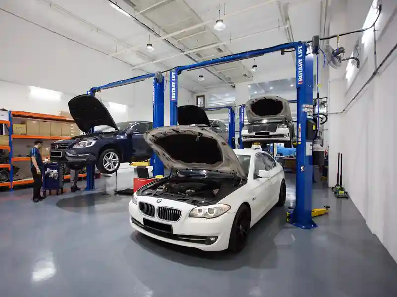
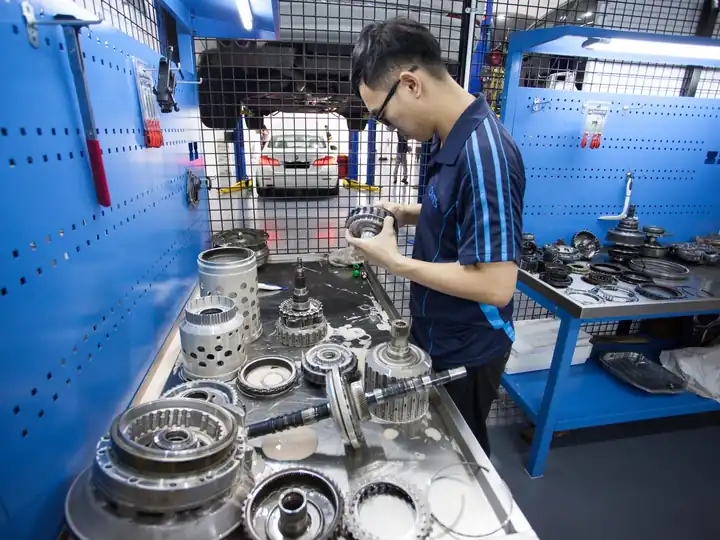
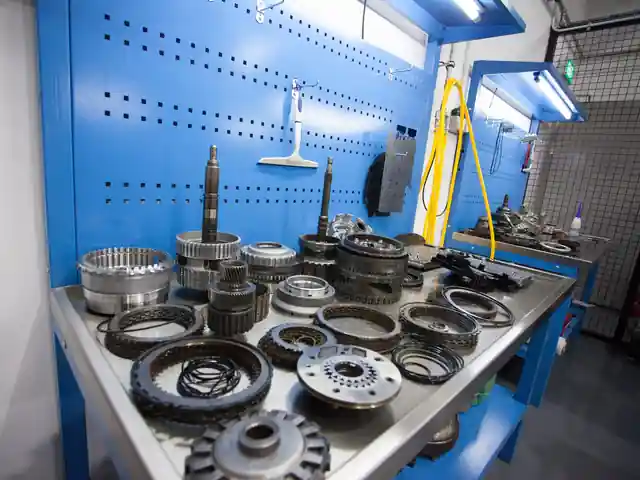
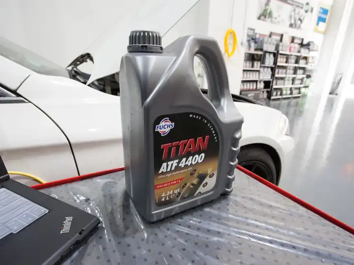
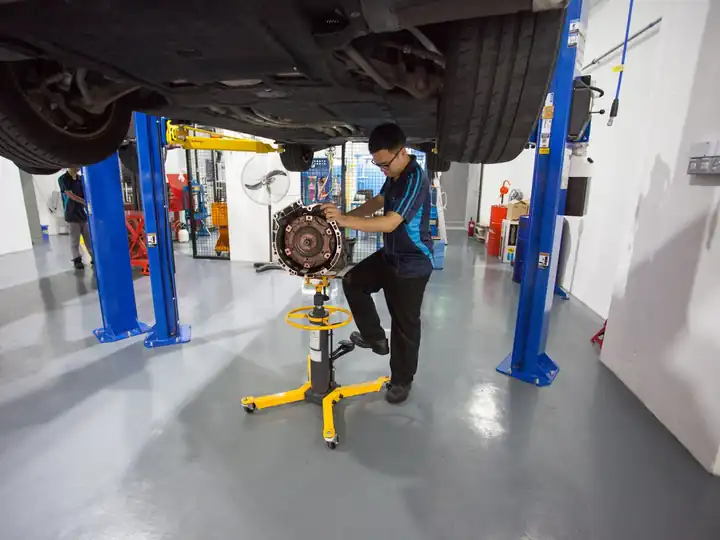
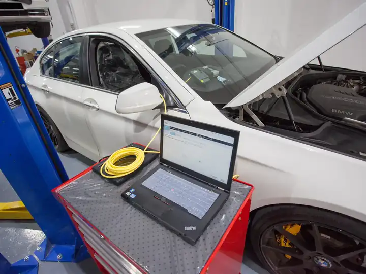
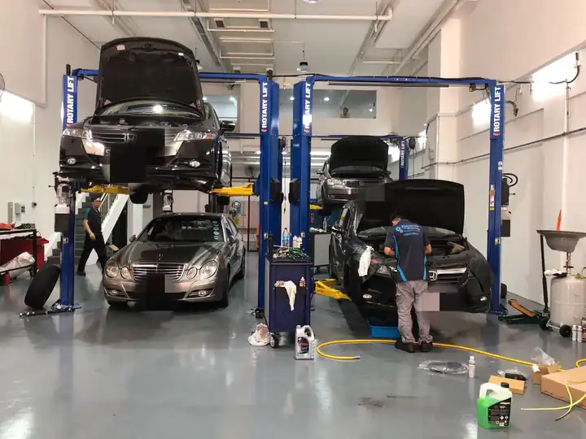
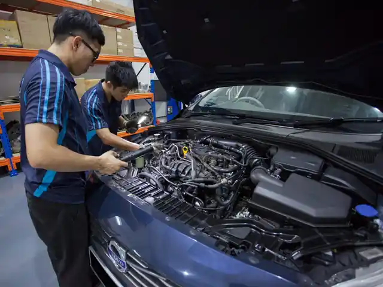

Gearbox Repair & Auto Transmission Specialist in Singapore
I’m Jacky. I diagnose and test your gearbox myself, check the repair, and road-test the car before I hand it back to you. Repair, overhaul, upgrades and servicing for all car makes.
- Diagnostic from S$30
- Free towing / pick-up
- 6-month warranty
- Final road test by Jacky
Why drivers bring their gearbox to Jacky
One specialist looks after your gearbox from the first test to the final road test, so you always know who is responsible for your car.
Specialist
Auto transmission repair and overhaul for all types of vehicles.
Direct pricing
A clear quote after the diagnostic, before any work starts. You pay only for what is needed.
Quality parts & ATF
High quality parts and the correct Automatic Transmission Fluid for your gearbox.
One specialist, start to finish
Jacky diagnoses, inspects and road-tests your car himself, backed by a workshop team with over 15 years of combined gearbox experience.
6-month warranty
All repairs come with a standard 6-month warranty unless otherwise stated.
Free towing
Free pick-up or tow to our workshop during office hours.

The gearbox specialist you deal with from start to finish
Jacky diagnoses and tests your gearbox himself, explains the fault in plain words, and gives you the price before any work starts. The repair is done by an experienced workshop team; Jacky inspects the work and does the final road test before he hands the car back to you.
You can also come to Jacky for advice, for example a second opinion on a gearbox quote, or whether a repair is worth doing on your car.
From first test to final road test
Jacky is with your car at every check, so nothing is handed back until he is happy with it.
- 1
Diagnosis and testing
Jacky reads the fault codes, tests the gearbox and finds the actual cause.
- 2
A clear quote
He explains the fault and the price before any work starts. You decide.
- 3
The repair
An experienced workshop team, with over 15 years of combined gearbox experience, carries out the repair or overhaul. Jacky inspects the work.
- 4
Final test and handover
Jacky road-tests the car himself before he hands it back to you.
Gearbox services
From a quick ATF service to a full transmission overhaul or performance upgrade.
Gearbox Repair & Overhaul
We have a full range of diagnostic tools specialising in auto transmission to accurately identify the root cause.…
Learn more →
Gearbox Strengthening & Upgrade
Our transmission specialists can take re-conditioning to the next level with upgrades that strengthen gearbox…
Learn more →
Gearbox Maintenance & Servicing
Regular servicing of the auto transmission is as important as servicing the engine. We only use the manufacturer’s…
Learn more →
Free Towing / Pick-Up
We provide free pick-up to our workshop for gearbox repair during office hours. If the vehicle cannot move at all…
Learn more →Gearbox problems Jacky fixes
Noticed one of these? Book a diagnostic before a small fault becomes a full overhaul.
Transmission check light on
The engine or transmission check light comes on while driving. Some cars also hold one gear (often called “limp mode”) to protect the gearbox.
What it means →Lack of response
You press the accelerator and the car hesitates, or there is a delay before it goes into Drive or Reverse.
What it means →Can’t change gear
The car stays in first gear, or only shifts up to third, when moving off or while driving.
What it means →Jerking or gears slipping
The car jerks when shifting up or down, slips in and out of gear, or pops into neutral while driving.
What it means →Vibration
The car vibrates at high speed on low RPM, or when accelerating hard from a standstill.
What it means →ATF leaking or low
Bright red oil (ATF) stains on the floor after the car has been parked for a while.
What it means →Gearbox noise
A loud noise from the gearbox once the engine starts or while the car is moving.
What it means →Engine revs but car doesn’t speed up
You press the accelerator, the engine revs climb, but the car is slow to pick up speed, or the gear seems to slip out for a moment.
What it means →Burning smell
A sharp burning smell after driving, especially in stop-start traffic or after a long climb, sometimes with slipping or harsh shifts.
What it means →Car won’t move in Drive or Reverse
The engine starts and runs, but the car doesn’t move, or barely moves, when you select Drive or Reverse.
What it means →Gear lever stuck in Park
You press the brake but the gear lever won’t move out of Park, or the gear selector doesn’t respond.
What it means →Know the fault before you pay for a repair
Gearbox symptoms can have very different causes, from a worn solenoid to a failing torque converter. So Jacky diagnoses first, then quotes. You decide before any repair work starts.
- Pre-repair diagnostic from S$30
- Clear quote before any work starts
- Standard 6-month warranty on repairs

What customers say about Jacky
“… Arranged an appointment with Jacky and drove my BMW 5 series to let him check. Workshop was impressive from the setup …”
Ulysses Wang · BMW 5 Series
“… I was initially very worried about the repair cost when my Audi A4 gearbox was diagnosed to be faulty. But Jacky was very patient and professional in explaining to me the overhaul process and the quoted price was below what I have expected. My car was ready after 3 days and was given a 6 months warranty as well. I would definitely recommend my friends to them for any gearbox issues.”
Alvin Lee · Audi A4
Inside the workshop
Dedicated gearbox teardown stations, diagnostic equipment and an air-conditioned lounge where you can watch your car being worked on.


Where Jacky works
Two workshops in the north of Singapore.
Woodlands (Wave 9)
71 Woodlands Industrial Park E9, #01-25 Wave 9
Singapore 757048
- Mon – Fri
- 9:00am – 6:00pm
- Saturday
- 9:00am – 3:00pm
- Sun & PH
- Closed
Gearbox repair FAQ
How much does a gearbox repair cost in Singapore?
How much is the diagnostic?
My car can’t move. Can you tow it?
Which car brands do you work on?
Is there a warranty after repair?
What are the signs my gearbox needs attention?
Where are your workshops and when are you open?
Gearbox acting up? Talk to Jacky.
WhatsApp or call us. If the car can’t move, we’ll tow it in for free.